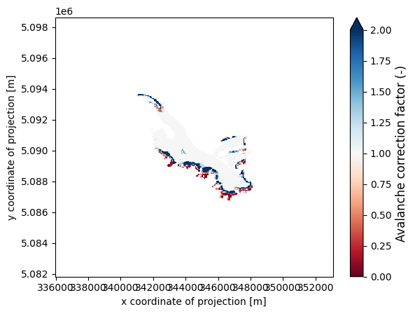
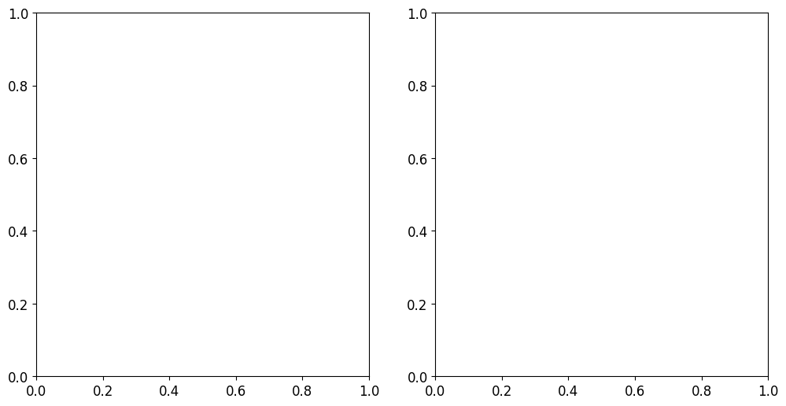

Avalanches in OGGM#
In this notebook, we showcase a recent addition to OGGM: a representation of avalanche contribution to glacier mass balance, based on the work by Kneib et al. (2025).
This is part of a series of two notebooks:
the first notebook, available on the snowslide repository, showcases how avalanche maps can be created and added to the OGGM glacier directories
in this notebook here, we explain how one can use these maps to account for the avalanche contribution to glacier mass balance for future projections of glacier volume change.
Notes on dependencies
This notebook and the first one relies on a lightweight python package which can be run with the latest version of OGGM (v1.6.3):
You will need to install this package using pip install.
Dependencies are explained in the README. Note that this package addresses 2 important functionalities:
snowslide_main.py(which callsfunctions.py) has all the tools to run the Snowslide avalanche routing on any DEM, competely independently from OGGMoggm_snowslide_compat_minimal.pycontains a list of functions and objects to link OGGM with Snowslide, starting withsnowslide_to_gdirandsnowslide_to_gdir_meanmonthlywhich OGGM calls to produce maps of snow redistribution for its DEMs.
To create the avalanche maps, Snowslide currently runs with pysheds v0.5, which is not part of the default OGGM environment and will need to be installed accordingly in your environment if you wish to produce your own avalanche maps (for example to run this notebook). This can be done easily:
pip install pysheds=0.5
In the most recent OGGM glacier directories we provide maps of snow redistribution by avalanches representative of the calibration period 2000-2019 for all glaciers in the world (level L3, glacier boundaries 80), which can then be ingested in the classic OGGM workflow without the need to re-run Snowslide, therefore with a very limited number of dependencies.
In this notebook, we simply install the minimal version of Snowslide below if needed:
# !pip install --no-deps git+https://github.com/OGGM/Snowslide.git
Snow redistribution from avalanches maps with OGGM-Snowslide#
In the previous notebook we generated maps of avalanche correction factors for a specific glacier. These maps are available in the most recent OGGM glacier directories. Let’s quickly check these maps. First, we load the glacier directory containing the avalanche map.
# Libs
import numpy as np
import pandas as pd
import xarray as xr
import matplotlib.pyplot as plt
# Locals
from oggm import cfg, utils, workflow, tasks
# Initialize OGGM and set up the default run parameters
cfg.initialize(logging_level='INFO')
# Local working directory (where OGGM will write its output)
cfg.PATHS['working_dir'] = utils.mkdir(utils.get_temp_dir('snowslide'))
cfg.PARAMS['store_model_geometry'] = True
cfg.PARAMS['min_ice_thick_for_length'] = 1 # a glacier is when ice thicker than 1m
rgi_ids = ['RGI60-11.03638'] # Argentiere Glacier
2026-07-20 13:39:33: oggm.cfg: Reading default parameters from the OGGM `params.cfg` configuration file.
2026-07-20 13:39:33: oggm.cfg: Multiprocessing switched OFF according to the parameter file.
2026-07-20 13:39:33: oggm.cfg: Multiprocessing: using all available processors (N=4)
2026-07-20 13:39:33: oggm.cfg: PARAMS['store_model_geometry'] changed from `False` to `True`.
2026-07-20 13:39:33: oggm.cfg: PARAMS['min_ice_thick_for_length'] changed from `2.0` to `1`.
base_url = 'https://cluster.klima.uni-bremen.de/~mkneib/global_snowslide_maps_oggm_2025.6/global_whypso/' # gdirs with avalanche maps
gdirs = workflow.init_glacier_directories(rgi_ids, prepro_base_url=base_url, from_prepro_level=3, prepro_border=80)
gdir = gdirs[0]
2026-07-20 13:39:33: oggm.workflow: init_glacier_directories from prepro level 3 on 1 glaciers.
2026-07-20 13:39:33: oggm.workflow: Execute entity tasks [gdir_from_prepro] on 1 glaciers
2026-07-20 13:39:33: oggm.utils: Downloading https://cluster.klima.uni-bremen.de/~mkneib/global_snowslide_maps_oggm_2025.6/global_whypso/RGI62/b_080/L3/RGI60-11/RGI60-11.036.tar to /github/home/OGGM/download_cache/cluster.klima.uni-bremen.de/~mkneib/global_snowslide_maps_oggm_2025.6/global_whypso/RGI62/b_080/L3/RGI60-11/RGI60-11.036.tar...
2026-07-20 13:39:34: oggm.utils: Downloading https://cluster.klima.uni-bremen.de/~mkneib/global_snowslide_maps_oggm_2025.6/global_whypso/RGI62/b_080/L3/RGI60-11/RGI60-11.03.tar to /github/home/OGGM/download_cache/cluster.klima.uni-bremen.de/~mkneib/global_snowslide_maps_oggm_2025.6/global_whypso/RGI62/b_080/L3/RGI60-11/RGI60-11.03.tar...
Now we access the gridded information contained in the glacier directory
# Load the glacier DEM (to compute the initial distributed snow height)
gridded_data_path = gdir.get_filepath("gridded_data")
with xr.open_dataset(gridded_data_path) as ds:
ds = ds.load()
pfact = ds.snowslide_1m
Let’s now have a look at these snow depth maps!
img = pfact.where(ds.glacier_mask).plot.imshow(cmap="RdBu", vmin=0, vmax=2, add_colorbar=True)
img.colorbar.set_label("Avalanche correction factor (-)", fontsize=12)
img.colorbar.ax.tick_params(labelsize=10)
plt.show()

OK we have our maps of avalanche correction factors for our glacier - just as a reminder, these correspond to the ratio of snow depth with and without avalanches for the period 2000-2020. Now let’s look into how we account for this avalanche contribution to glacier mass balance.
Influence of avalanches on glacier mass balance#
OGGM being a flowline model, the avalanche correction factors need to be aggregated in 1D along the flowline. This of course introduces a very strong simplification - 2 tributaries, one with a strong avalanche input, and one without, will be attributed the same contribution. In an ideal world, one would be able to run a fully distributed model to properly account for this contribution, but as a first step, already having snow redistributed in 1D enables to get a first order estimate of the avalanche effect :)
In the glacier directory with avalanches generation process, these avalanche correction factors have bin binned along our flowlines to recalibrate the model. As an illustration, we repeat the steps that have been done below:
More documentation here:
https://docs.oggm.org/en/stable/generated/oggm.tasks.elevation_band_flowline.html
https://docs.oggm.org/en/stable/generated/oggm.tasks.fixed_dx_elevation_band_flowline.html
workflow.execute_entity_task(tasks.elevation_band_flowline, gdir, bin_variables=['snowslide_1m'])
workflow.execute_entity_task(tasks.fixed_dx_elevation_band_flowline, gdir, bin_variables=['snowslide_1m'], preserve_totals=True);
2026-07-20 13:39:57: oggm.workflow: Execute entity tasks [elevation_band_flowline] on 1 glaciers
2026-07-20 13:39:57: oggm.core.centerlines: (RGI60-11.03638) elevation_band_flowline
2026-07-20 13:39:57: oggm.workflow: Execute entity tasks [fixed_dx_elevation_band_flowline] on 1 glaciers
2026-07-20 13:39:57: oggm.core.centerlines: (RGI60-11.03638) fixed_dx_elevation_band_flowline
OK so now that we have avalanche correction factors along the flowline we can actually update our mass balance model from the OGGM TI model:
To a model that accounts for the avalanche contribution:
And of course, the parameters of the model now need to be recalibrated against the geodetic mass balance.
At this stage, Snowslide has not been adapted to the spinup recalibration scheme, so we simply use the informed 3 steps calibration strategy introduced in OGGM v1.6 and described in Schuster et al. (2023).
First we check the pre-calibrated parameters from the glacier directory originally obtained with model spinup
gdir.read_json("mb_calib")
{'rgi_id': 'RGI60-11.03638',
'bias': 0,
'melt_f': 4.8469078329007225,
'prcp_fac': 2.967819925599159,
'temp_bias': -0.6326349913941922,
'reference_mb': -1049.4,
'reference_mb_err': 166.8,
'reference_period': '2000-01-01_2020-01-01',
'mb_global_params': {'temp_default_gradient': -0.0065,
'temp_all_solid': 0.0,
'temp_all_liq': 2.0,
'temp_melt': -1.0},
'baseline_climate_source': 'GSWP3_W5E5'}
Next, we recalibrate WITHOUT avalanches (informed 3 steps, Schuster et al., 2023) for reference.
from oggm.core.massbalance import mb_calibration_from_geodetic_mb
mb_calibration_from_geodetic_mb(gdir, write_to_gdir=True, overwrite_gdir=True,
informed_threestep=True)
gdir.read_json("mb_calib")
2026-07-20 13:39:57: oggm.core.massbalance: (RGI60-11.03638) mb_calibration_from_geodetic_mb
2026-07-20 13:39:57: oggm.core.massbalance: InvalidParamsError occurred during task mb_calibration_from_geodetic_mb on RGI60-11.03638: With `informed_threestep` you cannot use a preset prcp_fac - we need to rely on decide_winter_precip_factor().
---------------------------------------------------------------------------
InvalidParamsError Traceback (most recent call last)
Cell In[8], line 3
1 from oggm.core.massbalance import mb_calibration_from_geodetic_mb
2
----> 3 mb_calibration_from_geodetic_mb(gdir, write_to_gdir=True, overwrite_gdir=True,
4 informed_threestep=True)
5
6 gdir.read_json("mb_calib")
File /usr/local/pyenv/versions/3.13.13/lib/python3.13/site-packages/oggm/utils/_workflow.py:522, in entity_task.__call__.<locals>._entity_task(gdir, reset, print_log, return_value, continue_on_error, add_to_log_file, **kwargs)
520 signal.alarm(gdir.settings['task_timeout'])
521 ex_t = time.time()
--> 522 out = task_func(gdir, **kwargs)
523 ex_t = time.time() - ex_t
524 if gdir.settings['task_timeout'] > 0:
File /usr/local/pyenv/versions/3.13.13/lib/python3.13/site-packages/oggm/core/massbalance.py:4409, in mb_calibration_from_geodetic_mb(gdir, settings_filesuffix, observations_filesuffix, use_observations_file, ref_mb_period, file_path, temp_bias_file_path, write_to_gdir, overwrite_gdir, use_regional_avg, override_missing, use_2d_mb, informed_threestep, calibrate_param1, calibrate_param2, calibrate_param3, mb_model_class, **kwargs)
4406 assert np.isfinite(temp_bias), 'Temp bias not finite?'
4408 if gdir.settings['prcp_fac'] is not None:
-> 4409 raise InvalidParamsError('With `informed_threestep` you cannot use '
4410 'a preset prcp_fac - we need to rely on '
4411 'decide_winter_precip_factor().')
4413 # Some magic heuristics - we just decide to calibrate
4414 # precip -> melt_f -> temp but informed by previous data.
4415
(...) 4419 # We use the precip factor but allow it to vary between 0.8, 1.2 of
4420 # the previous value (uncertainty).
4421 prcp_fac = decide_winter_precip_factor(gdir)
InvalidParamsError: With `informed_threestep` you cannot use a preset prcp_fac - we need to rely on decide_winter_precip_factor().
Finally, we recalibrate WITH avalanches (informed 3 steps, Schuster et al., 2023), using the adapted functionaties from oggm_snowslide_compat
from snowslide.oggm_snowslide_compat_minimal import mb_calibration_from_geodetic_mb_with_avalanches
mb_calibration_from_geodetic_mb_with_avalanches(gdir,
write_to_gdir=True,
overwrite_gdir=True,
informed_threestep=True)
gdir.read_json("mb_calib", filesuffix='_with_ava')
2026-07-20 13:39:58: snowslide.oggm_snowslide_compat_minimal: (RGI60-11.03638) mb_calibration_from_geodetic_mb_with_avalanches
2026-07-20 13:39:58: oggm.core.massbalance: (RGI60-11.03638) mb_calibration_from_scalar_mb_with_ava
2026-07-20 13:39:58: oggm.core.massbalance: InvalidWorkflowError occurred during task mb_calibration_from_scalar_mb_with_ava on RGI60-11.03638: You provided a reference mass balance, but their is already one stored in the current observation file (observations.yml). If you want to overwrite set overwrite_observations = True.
2026-07-20 13:39:58: snowslide.oggm_snowslide_compat_minimal: InvalidWorkflowError occurred during task mb_calibration_from_geodetic_mb_with_avalanches on RGI60-11.03638: You provided a reference mass balance, but their is already one stored in the current observation file (observations.yml). If you want to overwrite set overwrite_observations = True.
---------------------------------------------------------------------------
InvalidWorkflowError Traceback (most recent call last)
Cell In[9], line 3
1 from snowslide.oggm_snowslide_compat_minimal import mb_calibration_from_geodetic_mb_with_avalanches
2
----> 3 mb_calibration_from_geodetic_mb_with_avalanches(gdir,
4 write_to_gdir=True,
5 overwrite_gdir=True,
6 informed_threestep=True)
File /usr/local/pyenv/versions/3.13.13/lib/python3.13/site-packages/oggm/utils/_workflow.py:522, in entity_task.__call__.<locals>._entity_task(gdir, reset, print_log, return_value, continue_on_error, add_to_log_file, **kwargs)
520 signal.alarm(gdir.settings['task_timeout'])
521 ex_t = time.time()
--> 522 out = task_func(gdir, **kwargs)
523 ex_t = time.time() - ex_t
524 if gdir.settings['task_timeout'] > 0:
File /usr/local/pyenv/versions/3.13.13/lib/python3.13/site-packages/snowslide/oggm_snowslide_compat_minimal.py:1060, in mb_calibration_from_geodetic_mb_with_avalanches(gdir, ref_period, write_to_gdir, overwrite_gdir, override_missing, informed_threestep, use_regional_avg, mb_model_class)
1054 prcp_fac_max = clip_scalar(prcp_fac * 1.2, mi, ma)
1056 # If we want to allow them to vary more (but keeping the minimum and maximum values)
1057 #prcp_fac_min = mi
1058 #prcp_fac_max = ma
-> 1060 return mb_calibration_from_scalar_mb(gdir,
1061 ref_mb=ref_mb,
1062 ref_mb_err=ref_mb_err,
1063 ref_period=ref_period,
1064 write_to_gdir=write_to_gdir,
1065 overwrite_gdir=overwrite_gdir,
1066 calibrate_param1='prcp_fac',
1067 calibrate_param2='melt_f',
1068 calibrate_param3='temp_bias',
1069 prcp_fac=prcp_fac,
1070 prcp_fac_min=prcp_fac_min,
1071 prcp_fac_max=prcp_fac_max,
1072 temp_bias=temp_bias,
1073 mb_model_class=mb_model_class,
1074 filesuffix='_with_ava',
1075 )
1077 else:
1078 # We assume it has been calibrated
1079 calib_params = gdir.read_json("mb_calib")
File /usr/local/pyenv/versions/3.13.13/lib/python3.13/site-packages/oggm/utils/_workflow.py:522, in entity_task.__call__.<locals>._entity_task(gdir, reset, print_log, return_value, continue_on_error, add_to_log_file, **kwargs)
520 signal.alarm(gdir.settings['task_timeout'])
521 ex_t = time.time()
--> 522 out = task_func(gdir, **kwargs)
523 ex_t = time.time() - ex_t
524 if gdir.settings['task_timeout'] > 0:
File /usr/local/pyenv/versions/3.13.13/lib/python3.13/site-packages/oggm/core/massbalance.py:4750, in mb_calibration_from_scalar_mb(gdir, settings_filesuffix, observations_filesuffix, overwrite_observations, ref_mb, ref_mb_unit, ref_mb_err, ref_mb_period, ref_mb_years, write_to_gdir, overwrite_gdir, use_2d_mb, calibrate_param1, calibrate_param2, calibrate_param3, melt_f, melt_f_min, melt_f_max, prcp_fac, prcp_fac_min, prcp_fac_max, temp_bias, temp_bias_min, temp_bias_max, mb_model_class, return_mb_model, **kwargs)
4747 else:
4748 # if the provided is the same as the one stored in the file it is fine
4749 if ref_mb_in_file != ref_mb_provided:
-> 4750 raise InvalidWorkflowError(
4751 'You provided a reference mass balance, but their is already '
4752 'one stored in the current observation file '
4753 f'({os.path.basename(gdir.observations.path)}). If you want to '
4754 'overwrite set overwrite_observations = True.')
4755 else:
4756 ref_mb_use = ref_mb_in_file
InvalidWorkflowError: You provided a reference mass balance, but their is already one stored in the current observation file (observations.yml). If you want to overwrite set overwrite_observations = True.
You can notice that both the precipitation correction and the degree-day factor are influenced by the introduction of the snow redistribution by avalanches. But let’s now compare directly the altitudinal mass balances from our ‘control’ and ‘avalanches’ scenarios.
# import TI model classes from oggm and oggm_snowslide_compat
from oggm.core.massbalance import MonthlyTIModel
from snowslide.oggm_snowslide_compat_minimal import MonthlyTIAvalancheModel
# Get flowline
flowline = gdir.read_pickle('inversion_flowlines')[0]
# get mass balance model
mb_control = MonthlyTIModel(gdir)
mb_ava = MonthlyTIAvalancheModel(gdir)
# SMB 2000-2020 (control & ava models)
# get annual mass balance at bin elevation
df_control = pd.DataFrame(index=flowline.dx_meter * np.arange(flowline.nx))
df_ava = pd.DataFrame(index=flowline.dx_meter * np.arange(flowline.nx))
for year in range(2000, 2020):
df_control[year] = mb_control.get_annual_mb(flowline.surface_h, year=year) * cfg.SEC_IN_YEAR * mb_control.rho
df_ava[year] = mb_ava.get_annual_mb(flowline.surface_h, year=year) * cfg.SEC_IN_YEAR * mb_control.rho
df_control = df_control.mean(axis=1)
df_ava = df_ava.mean(axis=1)
plt.plot(flowline.surface_h,df_control,label='Control')
plt.plot(flowline.surface_h,df_ava,label='Avalanches')
plt.legend(fontsize = 14)
plt.title('2000-2020 SMB', fontsize = 20)
plt.xlabel('Elevation [m a.s.l]', fontsize = 16)
plt.ylabel('Annual SMB [mm w.eq/yr]', fontsize = 16)
plt.xticks(fontsize=12)
plt.yticks(fontsize=12)
plt.show()
---------------------------------------------------------------------------
AttributeError Traceback (most recent call last)
Cell In[10], line 18
14 # get annual mass balance at bin elevation
15 df_control = pd.DataFrame(index=flowline.dx_meter * np.arange(flowline.nx))
16 df_ava = pd.DataFrame(index=flowline.dx_meter * np.arange(flowline.nx))
17 for year in range(2000, 2020):
---> 18 df_control[year] = mb_control.get_annual_mb(flowline.surface_h, year=year) * cfg.SEC_IN_YEAR * mb_control.rho
19 df_ava[year] = mb_ava.get_annual_mb(flowline.surface_h, year=year) * cfg.SEC_IN_YEAR * mb_control.rho
20
21 df_control = df_control.mean(axis=1)
AttributeError: 'MonthlyTIModel' object has no attribute 'rho'
The 2 models were calibrated following the same procedure (informed 3 steps) and against the same geodetic mass balance from Hugonnet et al. (2021). The glacier-wide mass balance is therefore the same. However, you can see that introducing avalanches introduced more spatial variability in the SMB patterns, even in 1D.
IMPORTANT NOTE: All the steps above were included as such in the processing of the most recent glacier directories, so the different maps, parameter values & figures can be easily extracted for each glacier, even without having Snowslide installed!!
Influence of avalanches on future projections of glacier volumes and runoff#
This part now discusses how to make future projections of glacier & runoff changes that include these avalanche effects. For this, we still need a few functions from oggm_snowslide_compat, but which have much fewer ‘problematic’ dependencies. While for now you still need to install Snowslide entirely to run these, hopefully this’ll change in the future.
For the future projections we use ISIMIP3b GCMs since these are already bias-corrected with W5E5. It’s also a smaller subset so takes less time to download. Note that it would still work with the CMIP6 GCMs.
# oggm & oggm_snowslide_compat functions
from oggm.core import massbalance
from oggm.shop import gcm_climate
from snowslide.oggm_snowslide_compat_minimal import run_with_hydro_ava
# required configuration
cfg.PARAMS['store_fl_diagnostics'] = True
### FORWARD SIMULATIONS 2000-2020
# control scenario
workflow.execute_entity_task(tasks.run_with_hydro,gdir,
run_task=tasks.run_from_climate_data,
climate_filename='climate_historical', # use climate_historical for 2000-2020 period,
mb_model_class=massbalance.MonthlyTIModel,
output_filesuffix=f'_control_2000-2020', # recognize run for later
fixed_geometry_spinup_yr=2000, # start simulation year 2000 (adds volume but not area)
ye=2020 # for 2000-2020 use W5E5 simulation
);
# avalanches scenario
workflow.execute_entity_task(run_with_hydro_ava,gdir,
run_task=tasks.run_from_climate_data,
climate_filename='climate_historical', # use gcm_data, not climate_historical,
mb_model_class=MonthlyTIAvalancheModel,
output_filesuffix=f'_ava_2000-2020', # recognize run for later
fixed_geometry_spinup_yr=2000, # start simulation year 2000 (adds volume but not area)
ye=2020
);
### FORWARD SIMULATIONS 2020-2100
# you can choose one of these 5 different GCMs:
# 'gfdl-esm4_r1i1p1f1', 'mpi-esm1-2-hr_r1i1p1f1', 'mri-esm2-0_r1i1p1f1' ("low sensitivity" models, within typical ranges from AR6)
# 'ipsl-cm6a-lr_r1i1p1f1', 'ukesm1-0-ll_r1i1p1f2' ("hotter" models, especially ukesm1-0-ll)
members = ['ipsl-cm6a-lr_r1i1p1f1','gfdl-esm4_r1i1p1f1', 'mpi-esm1-2-hr_r1i1p1f1', 'mri-esm2-0_r1i1p1f1','ukesm1-0-ll_r1i1p1f2']
ssps = ['ssp126', 'ssp370','ssp585']
for gcm in members:
for ssp in ssps:
rid = f'_ISIMIP3b_{gcm}_{ssp}'
workflow.execute_entity_task(gcm_climate.process_monthly_isimip_data, gdir,
ssp = ssp,
member=gcm,
# recognize the climate file for later
output_filesuffix=rid
);
# control
workflow.execute_entity_task(tasks.run_with_hydro,gdir,
run_task=tasks.run_from_climate_data,
climate_filename='gcm_data', # use gcm_data for 2020-2100 period,
climate_input_filesuffix=rid, # use the chosen scenario
mb_model_class=massbalance.MonthlyTIModel,
init_model_filesuffix=f'_control_2000-2020', # we start from last simulation year year
output_filesuffix=f'{rid}_control_2020-2100', # recognize run for later
ys=2020, ye=2100 # for 2000-2020 use W5E5 simulation
);
# avalanches
workflow.execute_entity_task(run_with_hydro_ava,gdir,
run_task=tasks.run_from_climate_data,
climate_filename='gcm_data', # use gcm_data for 2020-2100 period,
climate_input_filesuffix=rid, # use the chosen scenario
mb_model_class=MonthlyTIAvalancheModel,
init_model_filesuffix=f'_ava_2000-2020', # we start from last simulation year year
output_filesuffix=f'{rid}_ava_2020-2100', # recognize run for later
ys=2020, ye=2100 # for 2000-2020 use W5E5 simulation
);
2026-07-20 13:39:58: oggm.cfg: PARAMS['store_fl_diagnostics'] changed from `False` to `True`.
2026-07-20 13:39:58: oggm.workflow: Execute entity tasks [run_with_hydro] on 1 glaciers
2026-07-20 13:39:58: oggm.core.flowline: (RGI60-11.03638) run_with_hydro_control_2000-2020
2026-07-20 13:39:58: oggm.core.flowline: (RGI60-11.03638) run_from_climate_data_control_2000-2020
2026-07-20 13:39:58: oggm.core.flowline: (RGI60-11.03638) flowline_model_run_control_2000-2020
2026-07-20 13:39:59: oggm.workflow: Execute entity tasks [run_with_hydro_ava] on 1 glaciers
2026-07-20 13:39:59: snowslide.oggm_snowslide_compat_minimal: (RGI60-11.03638) run_with_hydro_ava_ava_2000-2020
2026-07-20 13:39:59: oggm.core.flowline: (RGI60-11.03638) run_from_climate_data_ava_2000-2020
2026-07-20 13:39:59: oggm.core.flowline: TypeError occurred during task run_from_climate_data_ava_2000-2020 on RGI60-11.03638: MonthlyTIAvalancheModel.__init__() got an unexpected keyword argument 'settings_filesuffix'
2026-07-20 13:39:59: snowslide.oggm_snowslide_compat_minimal: TypeError occurred during task run_with_hydro_ava_ava_2000-2020 on RGI60-11.03638: MonthlyTIAvalancheModel.__init__() got an unexpected keyword argument 'settings_filesuffix'
---------------------------------------------------------------------------
TypeError Traceback (most recent call last)
Cell In[11], line 22
18 ye=2020 # for 2000-2020 use W5E5 simulation
19 );
20
21 # avalanches scenario
---> 22 workflow.execute_entity_task(run_with_hydro_ava,gdir,
23 run_task=tasks.run_from_climate_data,
24 climate_filename='climate_historical', # use gcm_data, not climate_historical,
25 mb_model_class=MonthlyTIAvalancheModel,
File /usr/local/pyenv/versions/3.13.13/lib/python3.13/site-packages/oggm/workflow.py:208, in execute_entity_task(task, gdirs, **kwargs)
204 if ng > 3:
205 log.workflow('WARNING: you are trying to run an entity task on '
206 '%d glaciers with multiprocessing turned off. OGGM '
207 'will run faster with multiprocessing turned on.', ng)
--> 208 out = [pc(gdir) for gdir in gdirs]
210 return out
File /usr/local/pyenv/versions/3.13.13/lib/python3.13/site-packages/oggm/workflow.py:125, in _pickle_copier.__call__(self, arg)
123 for func in self.call_func:
124 func, kwargs = func
--> 125 res = self._call_internal(func, arg, kwargs)
126 return res
File /usr/local/pyenv/versions/3.13.13/lib/python3.13/site-packages/oggm/workflow.py:119, in _pickle_copier._call_internal(self, call_func, gdir, kwargs)
116 gdir, gdir_kwargs = gdir
117 kwargs.update(gdir_kwargs)
--> 119 return call_func(gdir, **kwargs)
File /usr/local/pyenv/versions/3.13.13/lib/python3.13/site-packages/oggm/utils/_workflow.py:522, in entity_task.__call__.<locals>._entity_task(gdir, reset, print_log, return_value, continue_on_error, add_to_log_file, **kwargs)
520 signal.alarm(gdir.settings['task_timeout'])
521 ex_t = time.time()
--> 522 out = task_func(gdir, **kwargs)
523 ex_t = time.time() - ex_t
524 if gdir.settings['task_timeout'] > 0:
File /usr/local/pyenv/versions/3.13.13/lib/python3.13/site-packages/snowslide/oggm_snowslide_compat_minimal.py:1408, in run_with_hydro_ava(gdir, run_task, store_monthly_hydro, fixed_geometry_spinup_yr, ref_area_from_y0, ref_area_yr, ref_geometry_filesuffix, **kwargs)
1405 if fixed_geometry_spinup_yr is not None:
1406 kwargs['fixed_geometry_spinup_yr'] = fixed_geometry_spinup_yr
-> 1408 out = run_task(gdir, **kwargs) # ye=2020, fixed_geometry_spinup_yr=2000, climate_filename='climate_historical', climate_input_filesuffix='', output_filesuffix=f'_ava_2000-2020', mb_model_class=MonthlyTIAvalancheModel
1410 if out is None:
1411 raise InvalidWorkflowError('The run task ({}) did not run '
1412 'successfully.'.format(run_task.__name__))
File /usr/local/pyenv/versions/3.13.13/lib/python3.13/site-packages/oggm/utils/_workflow.py:522, in entity_task.__call__.<locals>._entity_task(gdir, reset, print_log, return_value, continue_on_error, add_to_log_file, **kwargs)
520 signal.alarm(gdir.settings['task_timeout'])
521 ex_t = time.time()
--> 522 out = task_func(gdir, **kwargs)
523 ex_t = time.time() - ex_t
524 if gdir.settings['task_timeout'] > 0:
File /usr/local/pyenv/versions/3.13.13/lib/python3.13/site-packages/oggm/core/flowline.py:4480, in run_from_climate_data(gdir, settings_filesuffix, ys, ye, min_ys, max_ys, fixed_geometry_spinup_yr, store_monthly_step, store_model_geometry, store_fl_diagnostics, climate_filename, mb_model, mb_model_class, climate_input_filesuffix, output_filesuffix, init_model_filesuffix, init_model_yr, init_model_fls, zero_initial_glacier, bias, temperature_bias, precipitation_factor, mb_diagnostics_filesuffix, save_mb_diagnostics_filesuffix, **kwargs)
4473 mb_model = MultipleFlowlineMassBalance.load_from_file(
4474 gdir,
4475 filesuffix=mb_diagnostics_filesuffix,
4476 climate_filename=_branch_fn,
4477 climate_input_filesuffix=_branch_isuf,
4478 )
4479 else:
-> 4480 mb_model = MultipleFlowlineMassBalance(
4481 gdir,
4482 mb_model_class=mb_model_class,
4483 filename=climate_filename,
4484 bias=bias,
4485 input_filesuffix=climate_input_filesuffix,
4486 settings_filesuffix=settings_filesuffix,
4487 )
4489 if temperature_bias is not None:
4490 mb_model.temp_bias += temperature_bias
File /usr/local/pyenv/versions/3.13.13/lib/python3.13/site-packages/oggm/core/massbalance.py:3494, in MultipleFlowlineMassBalance.__init__(self, gdir, settings_filesuffix, fls, mb_model_class, use_inversion_flowlines, flowlines_filesuffix, input_filesuffix, **kwargs)
3490 if rgi_filesuffix is not None:
3491 kwargs['input_filesuffix'] = rgi_filesuffix
3493 self.flowline_mb_models.append(
-> 3494 mb_model_class(
3495 gdir=gdir,
3496 settings_filesuffix=settings_filesuffix,
3497 **kwargs,
3498 )
3499 )
3501 self.valid_bounds = self.flowline_mb_models[-1].valid_bounds
3502 self.hemisphere = gdir.hemisphere
TypeError: MonthlyTIAvalancheModel.__init__() got an unexpected keyword argument 'settings_filesuffix'
OK, let’s plot the results!!
colors=['blue', 'orange', 'red']
def compute_stats(data):
return {
"median": np.median(data, axis=0),
"p25": np.percentile(data, 25, axis=0),
"p75": np.percentile(data, 75, axis=0),
}
plt.rcParams.update({
'font.size': 16, # Base font size
'axes.titlesize': 20, # Title font size
'axes.labelsize': 16, # Axis label font size
'xtick.labelsize': 12, # X-tick label font size
'ytick.labelsize': 12, # Y-tick label font size
'legend.fontsize': 16 # Legend font size
})
fig, axs = plt.subplots(1,2, figsize=(12,6))
ii = 0
for ssp in ssps:
control_volumes = []
ava_volumes = []
control_hist_volumes = []
ava_hist_volumes = []
for gcm in members:
rid = f'_ISIMIP3b_{gcm}_{ssp}'
with xr.open_dataset(gdir.get_filepath('model_diagnostics', filesuffix=f'{rid}_control_2020-2100')) as ds:
control_volumes.append(ds.volume_m3.values)
with xr.open_dataset(gdir.get_filepath('model_diagnostics', filesuffix=f'{rid}_ava_2020-2100')) as ds:
ava_volumes.append(ds.volume_m3.values)
time = ds.time.values
with xr.open_dataset(gdir.get_filepath('model_diagnostics', filesuffix=f'_control_2000-2020')) as ds:
control_hist_volumes.append(ds.volume_m3.values)
with xr.open_dataset(gdir.get_filepath('model_diagnostics', filesuffix=f'_ava_2000-2020')) as ds:
ava_hist_volumes.append(ds.volume_m3.values)
time_hist = ds.time.values
control_stats = compute_stats(control_volumes)
ava_stats = compute_stats(ava_volumes)
control_hist_stats = compute_stats(control_hist_volumes)
ava_hist_stats = compute_stats(ava_hist_volumes)
init_diff = control_hist_stats["median"][0]-ava_hist_stats["median"][0]
axs[1].plot(time, control_stats["median"], color=colors[ii], label = ssp)
axs[1].fill_between(time, control_stats["p25"], control_stats["p75"], color=colors[ii], alpha=0.1, edgecolor=None)
axs[1].plot(time, ava_stats["median"]+init_diff, color=colors[ii], linestyle="dashed")
axs[1].fill_between(time, ava_stats["p25"]+init_diff, ava_stats["p75"]+init_diff, color=colors[ii], alpha=0.1, edgecolor=None)
axs[1].plot(time_hist, control_hist_stats["median"], color="black")
axs[1].plot(time_hist, ava_hist_stats["median"]+init_diff, color="black")
axs[1].set_xlabel("Time [yrs]", fontsize=16)
axs[1].set_ylabel("Volume [m³]", fontsize=16)
axs[1].legend()
ii += 1
axs[0].plot(flowline.surface_h,df_control,label='Control',color = 'black')
axs[0].plot(flowline.surface_h,df_ava,label='Avalanches', color = 'black', linestyle = '--')
axs[0].legend(fontsize = 14)
axs[0].set_xlabel('Elevation [m a.s.l]', fontsize = 16)
axs[0].set_ylabel('Annual 2000-2020 SMB [mm w.eq/yr]', fontsize = 16)
plt.show()
---------------------------------------------------------------------------
NameError Traceback (most recent call last)
Cell In[12], line 22
18
19 fig, axs = plt.subplots(1,2, figsize=(12,6))
20
21 ii = 0
---> 22 for ssp in ssps:
23 control_volumes = []
24 ava_volumes = []
25 control_hist_volumes = []
NameError: name 'ssps' is not defined

As you can see for Argentière, including avalanches does not seem to strongly affect the future evolution of that glacier, despite an avalanche contribution to accumulation of around 20%. Feel free to test this for your own favorite glacier just by changing the RGI ID at the start of the notebook! Example - Bazhin Glacier in the Karakorum (RGI60-18.02066).
The calibration of the MonthlyTIAvalanche model above was conducted with the informed three-steps approach described in Schuster et al. (2023), as was done in Kneib et al. (2025) to allow for a direct comparison to the OGGM standard runs without avalanches and avoid the additional stochasticity from the dynamicc spinup. One can however also use this model with the OGGM dynamical spinup - just keep in mind though that the avalanche correction factors are fixed and correspond to the period 2000-2020 though! The example below follows the advanced dynamical spinup notebook. It would be similarly straightforward to use it for the daily model.
# We will "reconstruct" a possible glacier evolution from this year onwards
spinup_start_yr = 1979
# here we save the original melt_f for later
melt_f_original = gdir.read_json('mb_calib')['melt_f']
# and save some reference values we can compare to later
area_reference = gdir.rgi_area_m2 # RGI area
volume_reference = tasks.get_inversion_volume(gdir) # volume after regional calibration to consensus
ref_period = cfg.PARAMS['geodetic_mb_period'] # get the reference period we want to use, 2000 to 2020
df_ref_dmdtda = utils.get_geodetic_mb_dataframe().loc[gdir.rgi_id] # get the data from Hugonnet 2021
df_ref_dmdtda = df_ref_dmdtda.loc[df_ref_dmdtda['period'] == ref_period] # only select the desired period
dmdtda_reference = df_ref_dmdtda['dmdtda'].values[0] * 1000 # get the reference dmdtda and convert into kg m-2 yr-1
dmdtda_reference_error = df_ref_dmdtda['err_dmdtda'].values[0] * 1000 # corresponding uncertainty
# ---- First do the fixed geometry spinup ----
tasks.run_from_climate_data(gdir,
climate_filename='climate_historical',
mb_model_class=massbalance.MonthlyTIModel,
fixed_geometry_spinup_yr=spinup_start_yr, # Start the run at the RGI date but retro-actively correct the data with fixed geometry
output_filesuffix='_hist_fixed_geom', # where to write the output
);
# Read the output
with xr.open_dataset(gdir.get_filepath('model_diagnostics', filesuffix='_hist_fixed_geom')) as ds:
ds_hist = ds.load()
# with avalanches
tasks.run_from_climate_data(gdir,
climate_filename='climate_historical',
mb_model_class=MonthlyTIAvalancheModel,
fixed_geometry_spinup_yr=spinup_start_yr, # Start the run at the RGI date but retro-actively correct the data with fixed geometry
output_filesuffix='_hist_fixed_geom_ava', # where to write the output
);
with xr.open_dataset(gdir.get_filepath('model_diagnostics', filesuffix='_hist_fixed_geom_ava')) as ds:
ds_hist_ava = ds.load()
# ---- Second the dynamic spinup alone, matching area ----
tasks.run_dynamic_spinup(gdir,
spinup_start_yr=spinup_start_yr, # When to start the spinup
minimise_for='area', # what target to match at the RGI date
output_filesuffix='_spinup_dynamic_area', # Where to write the output
ye=2020, # When the simulation should stop
);
# Read the output
with xr.open_dataset(gdir.get_filepath('model_diagnostics', filesuffix='_spinup_dynamic_area')) as ds:
ds_dynamic_spinup_area = ds.load()
# with avalanches
mb_ava = MonthlyTIAvalancheModel(gdir)
if hasattr(mb_ava, 'repeat'):
mb_ava.repeat = int(mb_ava.repeat)
tasks.run_dynamic_spinup(gdir,
spinup_start_yr=spinup_start_yr, # When to start the spinup
mb_model_historical=mb_ava,
minimise_for='area', # what target to match at the RGI date
output_filesuffix='_spinup_dynamic_area_ava', # Where to write the output
ye=2020, # When the simulation should stop
);
with xr.open_dataset(gdir.get_filepath('model_diagnostics', filesuffix='_spinup_dynamic_area_ava')) as ds:
ds_dynamic_spinup_area_ava = ds.load()
# ---- Third the dynamic spinup alone, matching volume ----
tasks.run_dynamic_spinup(gdir,
spinup_start_yr=spinup_start_yr, # When to start the spinup
minimise_for='volume', # what target to match at the RGI date
output_filesuffix='_spinup_dynamic_volume', # Where to write the output
ye=2020, # When the simulation should stop
);
# Read the output
with xr.open_dataset(gdir.get_filepath('model_diagnostics', filesuffix='_spinup_dynamic_volume')) as ds:
ds_dynamic_spinup_volume = ds.load()
# with avalanches
tasks.run_dynamic_spinup(gdir,
spinup_start_yr=spinup_start_yr, # When to start the spinup
mb_model_historical=mb_ava,
minimise_for='volume', # what target to match at the RGI date
output_filesuffix='_spinup_dynamic_volume_ava', # Where to write the output
ye=2020, # When the simulation should stop
);
with xr.open_dataset(gdir.get_filepath('model_diagnostics', filesuffix='_spinup_dynamic_volume_ava')) as ds:
ds_dynamic_spinup_volume_ava = ds.load()
# ---- Fourth the dynamic melt_f calibration (includes a dynamic spinup matching area) ----
tasks.run_dynamic_melt_f_calibration(gdir,
ys=spinup_start_yr, # When to start the spinup
ye=2020, # When the simulation should stop
output_filesuffix='_dynamic_melt_f', # Where to write the output
);
with xr.open_dataset(gdir.get_filepath('model_diagnostics', filesuffix='_dynamic_melt_f')) as ds:
ds_dynamic_melt_f = ds.load()
# with avalanches
run_kwargs = {'mb_model_historical': mb_ava}
tasks.run_dynamic_melt_f_calibration(gdir,
ys=spinup_start_yr, # When to start the spinup
kwargs_run_function=run_kwargs,
ye=2020, # When the simulation should stop
output_filesuffix='_dynamic_melt_f_ava', # Where to write the output
);
with xr.open_dataset(gdir.get_filepath('model_diagnostics', filesuffix='_dynamic_melt_f_ava')) as ds:
ds_dynamic_melt_f_ava = ds.load()
# Now make a plot for comparision
y0 = gdir.rgi_date + 1
f, (ax1, ax2, ax3) = plt.subplots(1, 3, figsize=(16, 5))
colors = ['C0', 'C1', 'C2', 'C3']
ds_hist.volume_m3.plot(ax=ax1, color=colors[0]);
ds_hist_ava.volume_m3.plot(ax=ax1, color=colors[0], linestyle='--');
ds_dynamic_melt_f.volume_m3.plot(ax=ax1, color=colors[1]);
ds_dynamic_melt_f_ava.volume_m3.plot(ax=ax1, color=colors[1], linestyle='--');
ds_dynamic_spinup_area.volume_m3.plot(ax=ax1, color=colors[2]);
ds_dynamic_spinup_area_ava.volume_m3.plot(ax=ax1, color=colors[2], linestyle='--');
ds_dynamic_spinup_volume.volume_m3.plot(ax=ax1, color=colors[3]);
ds_dynamic_spinup_volume_ava.volume_m3.plot(ax=ax1, color=colors[3], linestyle='--');
ax1.set_title('Volume');
ax1.scatter(y0, volume_reference, c='C3');
ds_hist.area_m2.plot(ax=ax2, color=colors[0]);
ds_hist_ava.area_m2.plot(ax=ax2, color=colors[0], linestyle='--');
ds_dynamic_melt_f.area_m2.plot(ax=ax2, color=colors[1]);
ds_dynamic_melt_f_ava.area_m2.plot(ax=ax2, color=colors[1], linestyle='--');
ds_dynamic_spinup_area.area_m2.plot(ax=ax2, color=colors[2]);
ds_dynamic_spinup_area_ava.area_m2.plot(ax=ax2, color=colors[2], linestyle='--');
ds_dynamic_spinup_volume.area_m2.plot(ax=ax2, color=colors[3]);
ds_dynamic_spinup_volume_ava.area_m2.plot(ax=ax2, color=colors[3], linestyle='--');
ax2.set_title('Area');
ax2.scatter(y0, area_reference, c='C3')
ds_hist.length_m.plot(ax=ax3, color=colors[0], label='Fixed geometry spinup');
ds_hist_ava.length_m.plot(ax=ax3, color=colors[0], linestyle='--', label='Avalanches');
ds_dynamic_melt_f.length_m.plot(ax=ax3, color=colors[1], label='Dynamical melt_f calibration');
ds_dynamic_melt_f_ava.length_m.plot(ax=ax3, color=colors[1], linestyle='--');
ds_dynamic_spinup_area.length_m.plot(ax=ax3, color=colors[2], label='Dynamical spinup match area');
ds_dynamic_spinup_area_ava.length_m.plot(ax=ax3, color=colors[2], linestyle='--');
ds_dynamic_spinup_volume.length_m.plot(ax=ax3, color=colors[3], label='Dynamical spinup match volume');
ds_dynamic_spinup_volume_ava.length_m.plot(ax=ax3, color=colors[3], linestyle='--');
ax3.set_title('Length');
ax3.scatter(y0, ds_hist.sel(time=y0).length_m, c='C3', label='Reference values')
handles, labels = ax3.get_legend_handles_labels()
f.legend(handles, labels,
loc='lower center',
bbox_to_anchor=(0.5, -0.15), # Slightly below the figure bottom
ncol=3, # Spread items horizontally
frameon=True)
f.subplots_adjust(bottom=0.2)
plt.tight_layout()
plt.show();
2026-07-20 13:39:59: oggm.core.inversion: (RGI60-11.03638) get_inversion_volume
2026-07-20 13:39:59: oggm.core.flowline: (RGI60-11.03638) run_from_climate_data_hist_fixed_geom
2026-07-20 13:39:59: oggm.core.flowline: (RGI60-11.03638) flowline_model_run_hist_fixed_geom
2026-07-20 13:39:59: oggm.core.flowline: (RGI60-11.03638) run_from_climate_data_hist_fixed_geom_ava
2026-07-20 13:39:59: oggm.core.flowline: TypeError occurred during task run_from_climate_data_hist_fixed_geom_ava on RGI60-11.03638: MonthlyTIAvalancheModel.__init__() got an unexpected keyword argument 'settings_filesuffix'
---------------------------------------------------------------------------
TypeError Traceback (most recent call last)
Cell In[13], line 29
25 with xr.open_dataset(gdir.get_filepath('model_diagnostics', filesuffix='_hist_fixed_geom')) as ds:
26 ds_hist = ds.load()
27
28 # with avalanches
---> 29 tasks.run_from_climate_data(gdir,
30 climate_filename='climate_historical',
31 mb_model_class=MonthlyTIAvalancheModel,
32 fixed_geometry_spinup_yr=spinup_start_yr, # Start the run at the RGI date but retro-actively correct the data with fixed geometry
File /usr/local/pyenv/versions/3.13.13/lib/python3.13/site-packages/oggm/utils/_workflow.py:522, in entity_task.__call__.<locals>._entity_task(gdir, reset, print_log, return_value, continue_on_error, add_to_log_file, **kwargs)
520 signal.alarm(gdir.settings['task_timeout'])
521 ex_t = time.time()
--> 522 out = task_func(gdir, **kwargs)
523 ex_t = time.time() - ex_t
524 if gdir.settings['task_timeout'] > 0:
File /usr/local/pyenv/versions/3.13.13/lib/python3.13/site-packages/oggm/core/flowline.py:4480, in run_from_climate_data(gdir, settings_filesuffix, ys, ye, min_ys, max_ys, fixed_geometry_spinup_yr, store_monthly_step, store_model_geometry, store_fl_diagnostics, climate_filename, mb_model, mb_model_class, climate_input_filesuffix, output_filesuffix, init_model_filesuffix, init_model_yr, init_model_fls, zero_initial_glacier, bias, temperature_bias, precipitation_factor, mb_diagnostics_filesuffix, save_mb_diagnostics_filesuffix, **kwargs)
4473 mb_model = MultipleFlowlineMassBalance.load_from_file(
4474 gdir,
4475 filesuffix=mb_diagnostics_filesuffix,
4476 climate_filename=_branch_fn,
4477 climate_input_filesuffix=_branch_isuf,
4478 )
4479 else:
-> 4480 mb_model = MultipleFlowlineMassBalance(
4481 gdir,
4482 mb_model_class=mb_model_class,
4483 filename=climate_filename,
4484 bias=bias,
4485 input_filesuffix=climate_input_filesuffix,
4486 settings_filesuffix=settings_filesuffix,
4487 )
4489 if temperature_bias is not None:
4490 mb_model.temp_bias += temperature_bias
File /usr/local/pyenv/versions/3.13.13/lib/python3.13/site-packages/oggm/core/massbalance.py:3494, in MultipleFlowlineMassBalance.__init__(self, gdir, settings_filesuffix, fls, mb_model_class, use_inversion_flowlines, flowlines_filesuffix, input_filesuffix, **kwargs)
3490 if rgi_filesuffix is not None:
3491 kwargs['input_filesuffix'] = rgi_filesuffix
3493 self.flowline_mb_models.append(
-> 3494 mb_model_class(
3495 gdir=gdir,
3496 settings_filesuffix=settings_filesuffix,
3497 **kwargs,
3498 )
3499 )
3501 self.valid_bounds = self.flowline_mb_models[-1].valid_bounds
3502 self.hemisphere = gdir.hemisphere
TypeError: MonthlyTIAvalancheModel.__init__() got an unexpected keyword argument 'settings_filesuffix'
# and print out the modeled geodetic mass balances for comparison
def get_dmdtda(ds):
yr0_ref_mb, yr1_ref_mb = ref_period.split('_')
yr0_ref_mb = int(yr0_ref_mb.split('-')[0])
yr1_ref_mb = int(yr1_ref_mb.split('-')[0])
return ((ds.volume_m3.loc[yr1_ref_mb].values -
ds.volume_m3.loc[yr0_ref_mb].values) /
gdir.rgi_area_m2 /
(yr1_ref_mb - yr0_ref_mb) *
cfg.PARAMS['ice_density'])
print(f'Reference dmdtda 2000 to 2020 (Hugonnet 2021): {dmdtda_reference:.2f} +/- {dmdtda_reference_error:6.2f} kg m-2 yr-1')
print(f'Fixed geometry spinup dmdtda 2000 to 2020: {get_dmdtda(ds_hist):.2f} kg m-2 yr-1')
print(f'Fixed geometry spinup dmdtda 2000 to 2020 (avalanches): {get_dmdtda(ds_hist_ava):.2f} kg m-2 yr-1')
print(f'Dynamical spinup match area dmdtda 2000 to 2020: {get_dmdtda(ds_dynamic_spinup_area):.2f} kg m-2 yr-1')
print(f'Dynamical spinup match area dmdtda 2000 to 2020 (avalanches): {get_dmdtda(ds_dynamic_spinup_area_ava):.2f} kg m-2 yr-1')
print(f'Dynamical spinup match volume dmdtda 2000 to 2020: {get_dmdtda(ds_dynamic_spinup_volume):.2f} kg m-2 yr-1')
print(f'Dynamical spinup match volume dmdtda 2000 to 2020 (avalanches): {get_dmdtda(ds_dynamic_spinup_volume_ava):.2f} kg m-2 yr-1')
print(f'Dynamical melt_f calibration dmdtda 2000 to 2020: {get_dmdtda(ds_dynamic_melt_f):.2f} kg m-2 yr-1')
print(f'Dynamical melt_f calibration dmdtda 2000 to 2020 (avalanches): {get_dmdtda(ds_dynamic_melt_f_ava):.2f} kg m-2 yr-1')
print(f'Original melt_f: {melt_f_original:.1f} kg m-2 day-1 °C-1')
print(f"Dynamic melt_f: {gdir.read_json('mb_calib')['melt_f']:.1f} kg m-2 day-1 °C-1")
Reference dmdtda 2000 to 2020 (Hugonnet 2021): -1049.40 +/- 166.80 kg m-2 yr-1
Fixed geometry spinup dmdtda 2000 to 2020: -1032.82 kg m-2 yr-1
---------------------------------------------------------------------------
NameError Traceback (most recent call last)
Cell In[14], line 15
11 cfg.PARAMS['ice_density'])
12
13 print(f'Reference dmdtda 2000 to 2020 (Hugonnet 2021): {dmdtda_reference:.2f} +/- {dmdtda_reference_error:6.2f} kg m-2 yr-1')
14 print(f'Fixed geometry spinup dmdtda 2000 to 2020: {get_dmdtda(ds_hist):.2f} kg m-2 yr-1')
---> 15 print(f'Fixed geometry spinup dmdtda 2000 to 2020 (avalanches): {get_dmdtda(ds_hist_ava):.2f} kg m-2 yr-1')
16 print(f'Dynamical spinup match area dmdtda 2000 to 2020: {get_dmdtda(ds_dynamic_spinup_area):.2f} kg m-2 yr-1')
17 print(f'Dynamical spinup match area dmdtda 2000 to 2020 (avalanches): {get_dmdtda(ds_dynamic_spinup_area_ava):.2f} kg m-2 yr-1')
18 print(f'Dynamical spinup match volume dmdtda 2000 to 2020: {get_dmdtda(ds_dynamic_spinup_volume):.2f} kg m-2 yr-1')
NameError: name 'ds_hist_ava' is not defined